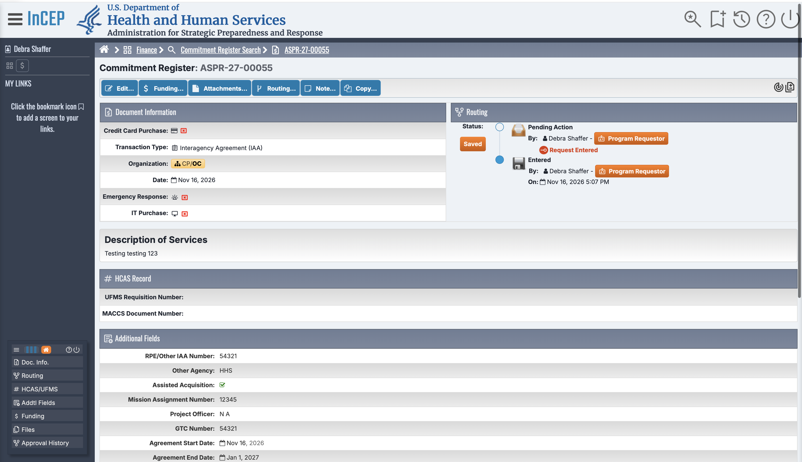
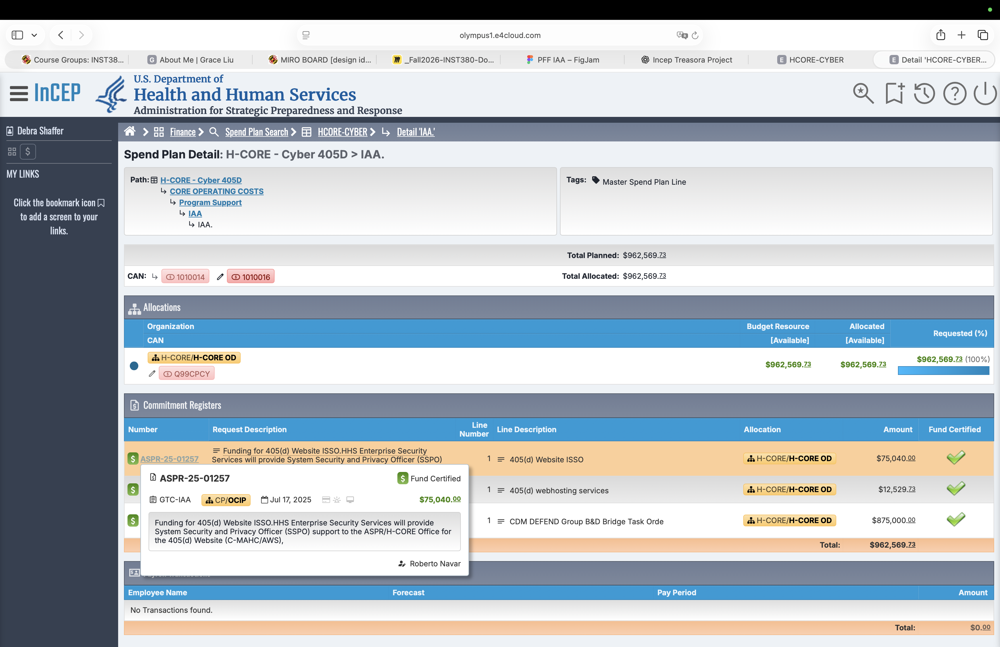
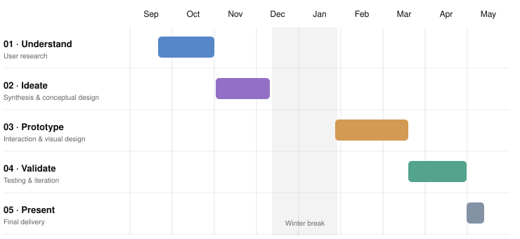
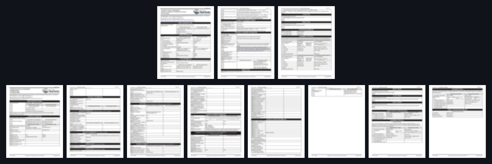
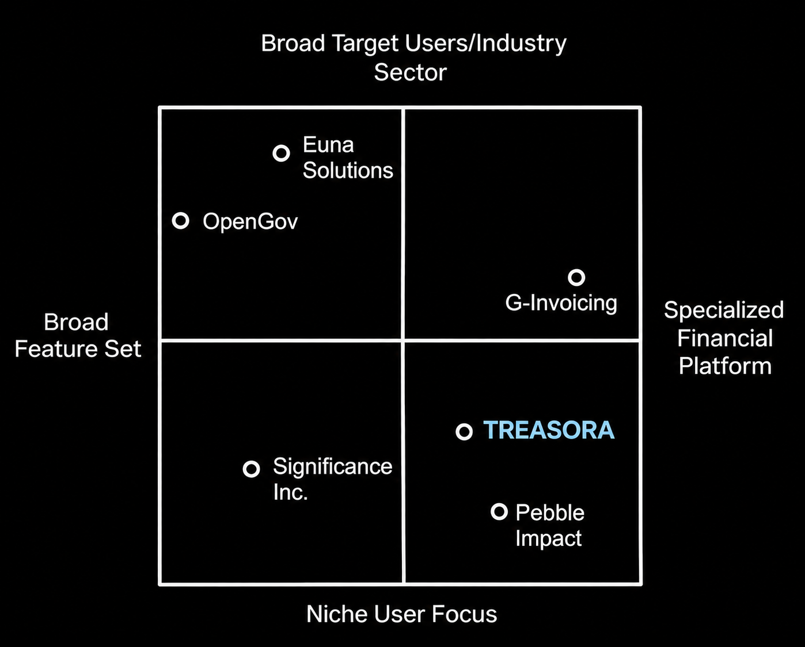
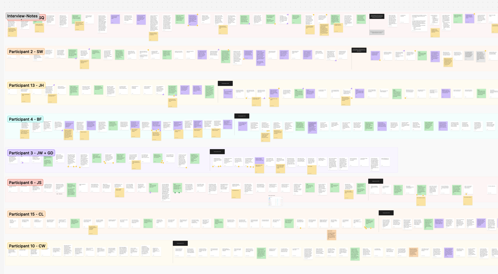
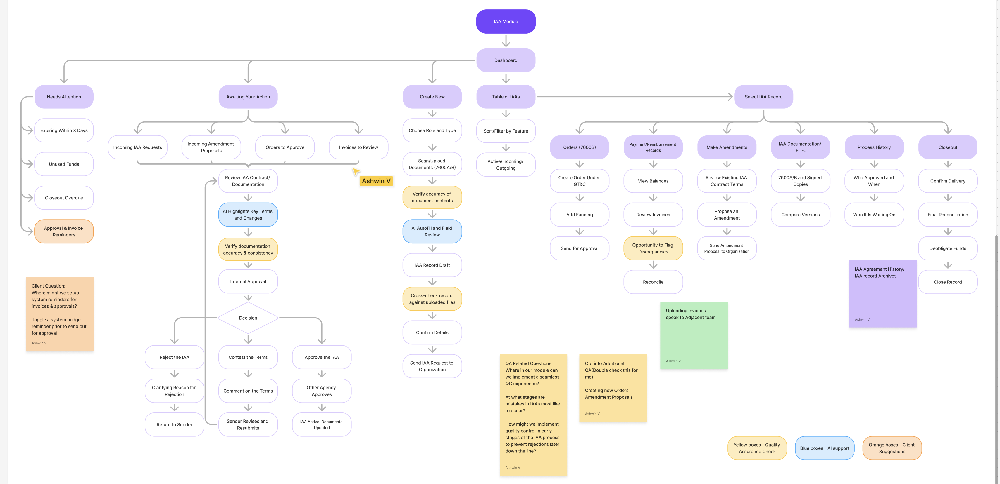

The general terms
3 pages, 27 numbered fields
- Who the two agencies are
- How long the agreement lasts
- Estimated total amount
- Approvals from both sides
PFF, LLC is a Maryland consulting and technology firm with more than ten years in government financial systems. Its product, Treasora, is an AI-assisted budgeting tool for agencies, nonprofits and small businesses, including teams working on emergency response. Our team is designing a new module that lets these organizations create, track and approve agreements with each other in one place, on web and mobile.
Status: early in the project. We have finished domain research and our first wireframes, and we are running user interviews. Final designs are planned for May 2027.
The project


When one agency pays another for work, the agreement is spread across Forms 7600A and 7600B, G-Invoicing and InCEP. Treasora can't track it, so teams stitch the process together by hand. As emergency response shifts to the states, more agencies need a better way.
Our module lets them manage, track and monitor each agreement in one place. AI reads the uploaded forms, flags missing or wrong fields and suggests fixes, so the question is how much help is useful, and when a person should decide.
Our direction: AI explains where its suggestions come from, and a person makes the final call.
Planned handoff
My process

We started with the client: we met with PFF's CEO and design systems team, studied Forms 7600A and 7600B, G-Invoicing and InCEP, and compared existing tools. Then we pulled it together in a Lean UX Canvas.

3 pages, 27 numbered fields
8 pages, 126 numbered fields
The canvas lists who we're designing for, what we believe will make the module succeed, and our riskiest assumption: what pain points users have in today's agreement and reimbursement process.

Click to view full size
We compared six tools on two questions: who they serve, from broad to niche, and what they cover, from broad to specialized.

“Public Service Platform exclusively for local and state government with powerful products for Finance, Permitting, Public Works, Procurement, and Budgeting.”
Serves about 2,000 agencies with a wide feature set, including disaster recovery tracking. opengov.com
“Solution to address accounting and reporting challenges around buy and sell transactions by providing a common platform for inter-governmental transaction.”
Built for federal agencies around one job: terms, orders and settlement. gsa.gov
What we learned
Most of these tools sit behind a demo request, so this comparison is built from public pages and documentation.
We are recruiting and interviewing agency staff about their daily work, the tools they use, what slows them down and how they feel about AI help. We cluster notes from each interview in FigJam to find patterns the whole team can agree on.
Early themes are not final requirements until we have talked to more people.

We mapped the module from a dashboard that shows what needs attention and what is waiting for you, to creating a new agreement, to each agreement's orders, payments, amendments, documents, history and closeout. Color marks where we added quality checks (yellow), AI support (blue) and client suggestions (orange).

Click to view full size
Low-fidelity wireframes then explore two ideas: a dashboard that shows every agreement's money at a glance, and a form that helps fill in a new transaction.


We will turn our findings into requirements and build clickable prototypes that are ready for developer handoff. The web version covers the full lifecycle, from uploading 7600A and 7600B forms to approvals and financial tracking. The mobile version focuses on checking status, pending approvals and money.
We plan to test these tasks: finding and opening agreements, reviewing AI-extracted form data, approving requests, and tracking financial activity.
User research
We interviewed nine people: the client's CEO, program budget analysts, financial analysts and a cybersecurity expert. Then we grouped their notes into patterns in FigJam.

The same details go into a PDF, InCEP and G-Invoicing.
Mistakes surface only after G-Invoicing rejects a record.
Everyone sees the same options, whatever their role.
Paper signatures and Excel trackers fill the gaps.
Users can't easily see where an agreement stands.
Useful, but raises security and reliability concerns.

Needs: to set up an agreement once and know where it stands.
Frustrated by: entering the same details in three systems and finding errors only after a rejection.
Uses: Excel trackers, PDFs, InCEP, G-Invoicing.
Client work in progress. Some details are simplified or left out to respect PFF's confidentiality.